1. Introduction
Since late December 2019, an outbreak of a novel coronavirus disease (COVID-19; previously known as 2019-nCoV) was reported in Wuhan, China, which had subsequently affected 210 countries worldwide. In general, COVID-19 is an acute resolved disease but it can also be deadly, with a 2% case fatality rate.
The COVID-19 pandemic in Indonesia is part of the ongoing worldwide pandemic of coronavirus disease 2019 (COVID-19) caused by severe acute respiratory syndrome coronavirus 2 (SARS-CoV-2). The virus was confirmed to have reached Indonesia on March 2, 2020. It started with two cases in March. As of July 31 2021, there had been 3,409,658 cumulative confirmed cases of COVID-19 in Indonesia and 94,119 reported cumulative deaths. All cases were spread in 34 provinces in Indonesia. Among all the provinces, DKI Jakarta (Indonesian: Daerah Khusus Ibukota Jakarta and in English: Special Capital Region of Jakarta) contributed close to 24% of the cumulative confirmed cases.
2. Problem Statement
Given that the cumulative confirmed cases were not evenly distributed within DKI Jakarta, this geospatial analysis aim to
- Reveal the spatial-temporal patterns of COVID-19 case in DKI Jakarta
- Find out sub-districts with relatively higher number of confirmed cases
- Identify trends of COVID-19 case in the sub-districts and how they change over time.
3. Data
In this analysis, the following dataset were used:
| Data | Description | Format | Source |
|---|---|---|---|
| Jakarta COVID-19 Data | Daily COVID-19 data of DKI Jakarta month between March 2020 to July 2021 | XLSX | Open Data Covid-19 Provinsi DKI |
| DKI Jarkata shapefile | Jakarta sub-district | Shapefile | Indonesia Geospatial Data |
*Note: Jakarta COVID-19 data file for last day of each month is used with the exception of missing file for January 2021
4. Getting Started
In this exercise, the key R package use is tmap package in R. Beside tmap package, seven other R packages will be used. They are:
- sf for handling geospatial data,
- tidyverse for subsetting and transforming data
- ReadXL for importing XLSX file
- plotly for data visualization
- dplyr for data maniupulation
- plyr for splitting, applying and combining Data
- tmap to produce thematic map
- spdep to create spatial weights matrix objects
packages <- c('sf','tidyverse','readxl','plotly','dplyr','plyr','tmap','spdep')
for(p in packages){
if(!require(p, character.only = T)){
install.packages(p)
}
library(p, character.only = T)
}
5. Data Import
5.1 Importing Geospatial Data Into R
Import the data and examine the content of the data set.
-Data will first be imported as an sf object to facilitate data pre-processing and initial analysis, then converted to sp class in the later part of the analysis.
DKI_Jakarta = st_read(dsn="data/geospatial",layer="BATAS_DESA_DESEMBER_2019_DUKCAPIL_DKI_JAKARTA")
Reading layer `BATAS_DESA_DESEMBER_2019_DUKCAPIL_DKI_JAKARTA' from data source `C:\Users\User\Desktop\IS415\lye-jia-wei\IS415_blog\_posts\2021-08-30-take-home-exercise-1\data\geospatial'
using driver `ESRI Shapefile'
Simple feature collection with 269 features and 161 fields
Geometry type: MULTIPOLYGON
Dimension: XY
Bounding box: xmin: 106.3831 ymin: -6.370815 xmax: 106.9728 ymax: -5.184322
Geodetic CRS: WGS 84The message above reveals that the geospatial objects are multipolygon features. There are a total of 269 multipolygon features and 161 fields in DKI_Jakarta simple feature data frame. DKI is in WGS84 projected coordinates systems.
5.2 Importing Attribute Data Into R
Next, we will import monthly Covid-19 data XLSX file from a folder into RStudio and save it into an R dataframe called Covid_DF.
5.2.1 Reading XLSX File
The task will be performed by using lapply() in combination with read_xlsx() function to identify all the xlsx file and then applying a function to transform the file in the File_List as shown in the code chunk below. We will also be adding Date field to extractthe date from file name in the subsequent step.
File_List <- list.files(path = "C:/Users/User/Desktop/IS415/lye-jia-wei/IS415_blog/_posts/2021-08-30-take-home-exercise-1/data/aspatial" , pattern = "*.xlsx", full.names = T)
DF_List <- lapply(seq_along(File_List), function(x) transform(read_xlsx(File_List[x]), Date = File_List[x]))
5.2.2 Creating Dataframe
We will then convert the DF_List into dataframe called Covid_DF using the ldpy function. This will be a temporary dataframe which we will then carry out data cleaning in the later step.
Covid_DF <- ldply(DF_List, data.frame)
6. Data Extraction, Wrangling and Integration
6.1 Geospatial Data
6.1.1 Data Cleaning
First, we have to ensure that spatial data used for analysis has no invalid geometries.
- There are no invalid geometries in the data that needs to be handled.
Check the geospatial data for missing values, as missing values can impact future calculations.
Simple feature collection with 2 features and 161 fields
Geometry type: MULTIPOLYGON
Dimension: XY
Bounding box: xmin: 106.8412 ymin: -6.154036 xmax: 106.8612 ymax: -6.144973
Geodetic CRS: WGS 84
OBJECT_ID KODE_DESA DESA KODE PROVINSI KAB_KOTA
243 25645 31888888 DANAU SUNTER 318888 DKI JAKARTA <NA>
244 25646 31888888 DANAU SUNTER DLL 318888 DKI JAKARTA <NA>
KECAMATAN DESA_KELUR JUMLAH_PEN JUMLAH_KK LUAS_WILAY KEPADATAN
243 <NA> <NA> 0 0 0 0
244 <NA> <NA> 0 0 0 0
PERPINDAHA JUMLAH_MEN PERUBAHAN WAJIB_KTP SILAM KRISTEN KHATOLIK
243 0 0 0 0 0 0 0
244 0 0 0 0 0 0 0
HINDU BUDHA KONGHUCU KEPERCAYAA PRIA WANITA BELUM_KAWI KAWIN
243 0 0 0 0 0 0 0 0
244 0 0 0 0 0 0 0 0
CERAI_HIDU CERAI_MATI U0 U5 U10 U15 U20 U25 U30 U35 U40 U45 U50
243 0 0 0 0 0 0 0 0 0 0 0 0 0
244 0 0 0 0 0 0 0 0 0 0 0 0 0
U55 U60 U65 U70 U75 TIDAK_BELU BELUM_TAMA TAMAT_SD SLTP SLTA
243 0 0 0 0 0 0 0 0 0 0
244 0 0 0 0 0 0 0 0 0 0
DIPLOMA_I DIPLOMA_II DIPLOMA_IV STRATA_II STRATA_III BELUM_TIDA
243 0 0 0 0 0 0
244 0 0 0 0 0 0
APARATUR_P TENAGA_PEN WIRASWASTA PERTANIAN NELAYAN AGAMA_DAN
243 0 0 0 0 0 0
244 0 0 0 0 0 0
PELAJAR_MA TENAGA_KES PENSIUNAN LAINNYA GENERATED KODE_DES_1
243 0 0 0 0 <NA> <NA>
244 0 0 0 0 <NA> <NA>
BELUM_ MENGUR_ PELAJAR_ PENSIUNA_1 PEGAWAI_ TENTARA KEPOLISIAN
243 0 0 0 0 0 0 0
244 0 0 0 0 0 0 0
PERDAG_ PETANI PETERN_ NELAYAN_1 INDUSTR_ KONSTR_ TRANSP_ KARYAW_
243 0 0 0 0 0 0 0 0
244 0 0 0 0 0 0 0 0
KARYAW1 KARYAW1_1 KARYAW1_12 BURUH BURUH_ BURUH1 BURUH1_1
243 0 0 0 0 0 0 0
244 0 0 0 0 0 0 0
PEMBANT_ TUKANG TUKANG_1 TUKANG_12 TUKANG__13 TUKANG__14
243 0 0 0 0 0 0
244 0 0 0 0 0 0
TUKANG__15 TUKANG__16 TUKANG__17 PENATA PENATA_ PENATA1_1 MEKANIK
243 0 0 0 0 0 0 0
244 0 0 0 0 0 0 0
SENIMAN_ TABIB PARAJI_ PERANCA_ PENTER_ IMAM_M PENDETA PASTOR
243 0 0 0 0 0 0 0 0
244 0 0 0 0 0 0 0 0
WARTAWAN USTADZ JURU_M PROMOT ANGGOTA_ ANGGOTA1 ANGGOTA1_1
243 0 0 0 0 0 0 0
244 0 0 0 0 0 0 0
PRESIDEN WAKIL_PRES ANGGOTA1_2 ANGGOTA1_3 DUTA_B GUBERNUR
243 0 0 0 0 0 0
244 0 0 0 0 0 0
WAKIL_GUBE BUPATI WAKIL_BUPA WALIKOTA WAKIL_WALI ANGGOTA1_4
243 0 0 0 0 0 0
244 0 0 0 0 0 0
ANGGOTA1_5 DOSEN GURU PILOT PENGACARA_ NOTARIS ARSITEK AKUNTA_
243 0 0 0 0 0 0 0 0
244 0 0 0 0 0 0 0 0
KONSUL_ DOKTER BIDAN PERAWAT APOTEK_ PSIKIATER PENYIA_ PENYIA1
243 0 0 0 0 0 0 0 0
244 0 0 0 0 0 0 0 0
PELAUT PENELITI SOPIR PIALAN PARANORMAL PEDAGA_ PERANG_ KEPALA_
243 0 0 0 0 0 0 0 0
244 0 0 0 0 0 0 0 0
BIARAW_ WIRASWAST_ LAINNYA_12 LUAS_DESA KODE_DES_3 DESA_KEL_1
243 0 0 0 0 <NA> <NA>
244 0 0 0 0 <NA> <NA>
KODE_12 geometry
243 0 MULTIPOLYGON (((106.8612 -6...
244 0 MULTIPOLYGON (((106.8504 -6...From the output, we can see that object ID 25645 and 25646 has missing value for the column KAB_KOTA and KECAMATAN amongst other column
KODE DESA format is inconsistent with the other data in the same column
Hence, we will proceed to drop the two rows with the following code chunk
6.1.2 Plotting the Geospatial Data
Let us now quickly visualize the DKI_Jakarta dataframe
plot(DKI_Jakarta)
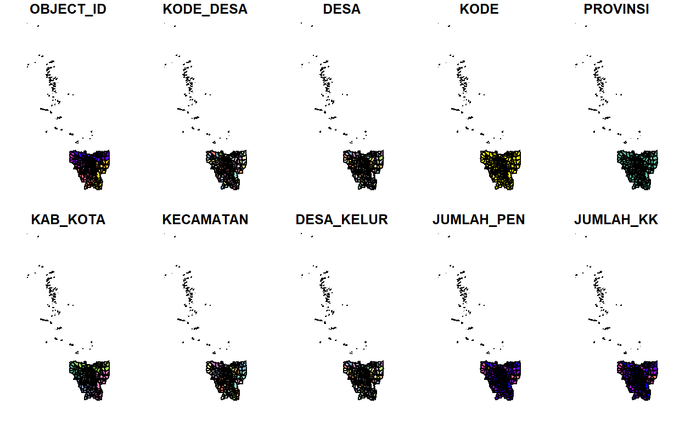
From the map, it is evident that DKI_Jakarta consists of outer islands which is not part of our intended study area. We will look into that after we check the projected coordination system.
6.1.3 Define Projection
The spatial data of Jakarta (Indonesia) is utilised in this analysis.
Initial data exploration reveals that data is to be projected with the World Geodetic System 1984 datum.
The corresponding EPSG code is EPSG: 23845.
The CRS of the data will be checked, then assigned accordingly.
Unit of measurement will be in metres.
st_crs(DKI_Jakarta)
Coordinate Reference System:
User input: WGS 84
wkt:
GEOGCRS["WGS 84",
DATUM["World Geodetic System 1984",
ELLIPSOID["WGS 84",6378137,298.257223563,
LENGTHUNIT["metre",1]]],
PRIMEM["Greenwich",0,
ANGLEUNIT["degree",0.0174532925199433]],
CS[ellipsoidal,2],
AXIS["latitude",north,
ORDER[1],
ANGLEUNIT["degree",0.0174532925199433]],
AXIS["longitude",east,
ORDER[2],
ANGLEUNIT["degree",0.0174532925199433]],
ID["EPSG",4326]]6.1.4 Assigning a coordinate system
Although DKI_Jakarta data frame is projected in WGS84 but when we read until the end of the print, it indicates that the EPSG is 4326. This is a wrong EPSG code because the correct EPSG code should be 23845.
In order to assign the correct EPSG code to DKI_Jakarta data frame as well as to set the national projeted coordinates systems of Indonesia whhich is DGN95, st_transform is used as shown in the code chunk below.
DKI_Jakarta <- st_transform(DKI_Jakarta, 23845)
Let us check the CSR again to ensure that changes are reflected
st_crs(DKI_Jakarta)
Coordinate Reference System:
User input: EPSG:23845
wkt:
PROJCRS["DGN95 / Indonesia TM-3 zone 54.1",
BASEGEOGCRS["DGN95",
DATUM["Datum Geodesi Nasional 1995",
ELLIPSOID["WGS 84",6378137,298.257223563,
LENGTHUNIT["metre",1]]],
PRIMEM["Greenwich",0,
ANGLEUNIT["degree",0.0174532925199433]],
ID["EPSG",4755]],
CONVERSION["Indonesia TM-3 zone 54.1",
METHOD["Transverse Mercator",
ID["EPSG",9807]],
PARAMETER["Latitude of natural origin",0,
ANGLEUNIT["degree",0.0174532925199433],
ID["EPSG",8801]],
PARAMETER["Longitude of natural origin",139.5,
ANGLEUNIT["degree",0.0174532925199433],
ID["EPSG",8802]],
PARAMETER["Scale factor at natural origin",0.9999,
SCALEUNIT["unity",1],
ID["EPSG",8805]],
PARAMETER["False easting",200000,
LENGTHUNIT["metre",1],
ID["EPSG",8806]],
PARAMETER["False northing",1500000,
LENGTHUNIT["metre",1],
ID["EPSG",8807]]],
CS[Cartesian,2],
AXIS["easting (X)",east,
ORDER[1],
LENGTHUNIT["metre",1]],
AXIS["northing (Y)",north,
ORDER[2],
LENGTHUNIT["metre",1]],
USAGE[
SCOPE["Cadastre."],
AREA["Indonesia - onshore east of 138E."],
BBOX[-9.19,138,-1.49,141.01]],
ID["EPSG",23845]]- We have successfully assign DGN95:23845 as the projection for the data.
6.1.5 Removing Outer Islands
To exclude all the outer islands from the DKI_Jakarta dataframe, we will plot an interactive map to identify the mainland.
tmap_mode("view")
tm_shape(DKI_Jakarta)+
tm_fill()
From the initial exploration, it can be found that Object_ID greater than 25383 consists of the island. Hence, we will proceed to filter them out using the code chunk below.
DKI_Jakarta <- filter(DKI_Jakarta, OBJECT_ID > 25383)
6.1.6 NA, Geometric Validity Checks and Correction
To check if there are any NA values as a result of data manipulation in the previous step.
Simple feature collection with 0 features and 161 fields
Bounding box: xmin: NA ymin: NA xmax: NA ymax: NA
Projected CRS: DGN95 / Indonesia TM-3 zone 54.1
[1] OBJECT_ID KODE_DESA DESA KODE PROVINSI
[6] KAB_KOTA KECAMATAN DESA_KELUR JUMLAH_PEN JUMLAH_KK
[11] LUAS_WILAY KEPADATAN PERPINDAHA JUMLAH_MEN PERUBAHAN
[16] WAJIB_KTP SILAM KRISTEN KHATOLIK HINDU
[21] BUDHA KONGHUCU KEPERCAYAA PRIA WANITA
[26] BELUM_KAWI KAWIN CERAI_HIDU CERAI_MATI U0
[31] U5 U10 U15 U20 U25
[36] U30 U35 U40 U45 U50
[41] U55 U60 U65 U70 U75
[46] TIDAK_BELU BELUM_TAMA TAMAT_SD SLTP SLTA
[51] DIPLOMA_I DIPLOMA_II DIPLOMA_IV STRATA_II STRATA_III
[56] BELUM_TIDA APARATUR_P TENAGA_PEN WIRASWASTA PERTANIAN
[61] NELAYAN AGAMA_DAN PELAJAR_MA TENAGA_KES PENSIUNAN
[66] LAINNYA GENERATED KODE_DES_1 BELUM_ MENGUR_
[71] PELAJAR_ PENSIUNA_1 PEGAWAI_ TENTARA KEPOLISIAN
[76] PERDAG_ PETANI PETERN_ NELAYAN_1 INDUSTR_
[81] KONSTR_ TRANSP_ KARYAW_ KARYAW1 KARYAW1_1
[86] KARYAW1_12 BURUH BURUH_ BURUH1 BURUH1_1
[91] PEMBANT_ TUKANG TUKANG_1 TUKANG_12 TUKANG__13
[96] TUKANG__14 TUKANG__15 TUKANG__16 TUKANG__17 PENATA
[101] PENATA_ PENATA1_1 MEKANIK SENIMAN_ TABIB
[106] PARAJI_ PERANCA_ PENTER_ IMAM_M PENDETA
[111] PASTOR WARTAWAN USTADZ JURU_M PROMOT
[116] ANGGOTA_ ANGGOTA1 ANGGOTA1_1 PRESIDEN WAKIL_PRES
[121] ANGGOTA1_2 ANGGOTA1_3 DUTA_B GUBERNUR WAKIL_GUBE
[126] BUPATI WAKIL_BUPA WALIKOTA WAKIL_WALI ANGGOTA1_4
[131] ANGGOTA1_5 DOSEN GURU PILOT PENGACARA_
[136] NOTARIS ARSITEK AKUNTA_ KONSUL_ DOKTER
[141] BIDAN PERAWAT APOTEK_ PSIKIATER PENYIA_
[146] PENYIA1 PELAUT PENELITI SOPIR PIALAN
[151] PARANORMAL PEDAGA_ PERANG_ KEPALA_ BIARAW_
[156] WIRASWAST_ LAINNYA_12 LUAS_DESA KODE_DES_3 DESA_KEL_1
[161] KODE_12 geometry
<0 rows> (or 0-length row.names)6.1.7 Retain the first nine fields in the DKI Jakarta sf data frame
Since we are only interested in the first nine fields of the DKI_Jakarta sf dataframe, we will only retain these columns.
DKI_Jakarta <- DKI_Jakarta[, 0:9]
6.1.8 Translating column name for DKI_Jakarta to English
For convenience and ease of comprehension, we will translate the DKI_Jakarta column names to English by using tidyverse rename function.
DKI_Jakarta <- DKI_Jakarta %>%
dplyr::rename(
Total_Population=JUMLAH_PEN, Sub_District=DESA_KELUR, District=KECAMATAN,
City=KAB_KOTA, Province=PROVINSI, Village=DESA, ID=KODE,
Village_Code=KODE_DESA, Object_ID=OBJECT_ID
)
6.2 Aspatial Data
6.2.1 Understanding Covid_DF
To better understand the data structure of Covid_DF, we will inspect it quickly by looking at 5 rows.
head(Covid_DF,5)
ID_KEL Nama_provinsi nama_kota nama_kecamatan
1 <NA> <NA> <NA> <NA>
2 3172051003 DKI JAKARTA JAKARTA UTARA PADEMANGAN
3 3173041007 DKI JAKARTA JAKARTA BARAT TAMBORA
4 3175041005 DKI JAKARTA JAKARTA TIMUR KRAMAT JATI
5 3175031003 DKI JAKARTA JAKARTA TIMUR JATINEGARA
nama_kelurahan SUSPEK Perawatan.RS...7 Isolasi.di.Rumah...8
1 TOTAL 717950 197 28717
2 ANCOL N/A N/A N/A
3 ANGKE N/A N/A N/A
4 BALE KAMBANG N/A N/A N/A
5 BALI MESTER N/A N/A N/A
Suspek.Meninggal Selesai.Isolasi...10 PROBABLE Perawatan.RS...12
1 2311 686725 7476 95
2 N/A N/A N/A N/A
3 N/A N/A N/A N/A
4 N/A N/A N/A N/A
5 N/A N/A N/A N/A
Isolasi.di.Rumah...13 Probable.Meninggal Selesai.Isolasi...15
1 0 5333 2048
2 N/A N/A N/A
3 N/A N/A N/A
4 N/A N/A N/A
5 N/A N/A N/A
PELAKU.PERJALANAN Perawatan.RS...17 Isolasi.di.Rumah...18
1 4452 0 3
2 N/A N/A N/A
3 N/A N/A N/A
4 N/A N/A N/A
5 N/A N/A N/A
Selesai.Isolasi...19 KONTAK.ERAT Perawatan.RS...21
1 4449 886591 0
2 N/A N/A N/A
3 N/A N/A N/A
4 N/A N/A N/A
5 N/A N/A N/A
Isolasi.di.Rumah...22 Selesai.Isolasi...23 DISCARDED
1 44028 842563 17463
2 N/A N/A N/A
3 N/A N/A N/A
4 N/A N/A N/A
5 N/A N/A N/A
Isolasi.di.Rumah...25 Meninggal...26 Selesai.Isolasi...27 POSITIF
1 0 1 17462 339735
2 N/A N/A N/A 834
3 N/A N/A N/A 617
4 N/A N/A N/A 755
5 N/A N/A N/A 358
Dirawat Sembuh Meninggal...31 Self.Isolation Keterangan
1 4425 323892 5478 5940 NA
2 8 808 9 9 NA
3 23 572 8 14 NA
4 8 698 15 34 NA
5 4 344 8 2 NA
Date
1 C:/Users/User/Desktop/IS415/lye-jia-wei/IS415_blog/_posts/2021-08-30-take-home-exercise-1/data/aspatial/Standar Kelurahan Data Corona (28 Februari 2021 Pukul 10.00).xlsx
2 C:/Users/User/Desktop/IS415/lye-jia-wei/IS415_blog/_posts/2021-08-30-take-home-exercise-1/data/aspatial/Standar Kelurahan Data Corona (28 Februari 2021 Pukul 10.00).xlsx
3 C:/Users/User/Desktop/IS415/lye-jia-wei/IS415_blog/_posts/2021-08-30-take-home-exercise-1/data/aspatial/Standar Kelurahan Data Corona (28 Februari 2021 Pukul 10.00).xlsx
4 C:/Users/User/Desktop/IS415/lye-jia-wei/IS415_blog/_posts/2021-08-30-take-home-exercise-1/data/aspatial/Standar Kelurahan Data Corona (28 Februari 2021 Pukul 10.00).xlsx
5 C:/Users/User/Desktop/IS415/lye-jia-wei/IS415_blog/_posts/2021-08-30-take-home-exercise-1/data/aspatial/Standar Kelurahan Data Corona (28 Februari 2021 Pukul 10.00).xlsx
ID_KEL...1 ID_KEL...2 ODP Proses.Pemantauan Selesai.Pemantauan PDP
1 <NA> <NA> NA NA NA NA
2 <NA> <NA> NA NA NA NA
3 <NA> <NA> NA NA NA NA
4 <NA> <NA> NA NA NA NA
5 <NA> <NA> NA NA NA NA
Masih.Dirawat Pulang.dan.Sehat Meninggal ODP.Meninggal
1 NA NA NA NA
2 NA NA NA NA
3 NA NA NA NA
4 NA NA NA NA
5 NA NA NA NA
PDP.Meninggal Isolasi.di.Rumah...21 Selesai.Isolasi...22
1 NA <NA> <NA>
2 NA <NA> <NA>
3 NA <NA> <NA>
4 NA <NA> <NA>
5 NA <NA> <NA>
Isolasi.di.Rumah...24 Meninggal...25 Selesai.Isolasi...26
1 <NA> <NA> <NA>
2 <NA> <NA> <NA>
3 <NA> <NA> <NA>
4 <NA> <NA> <NA>
5 <NA> <NA> <NA>
Meninggal...30 Meninggal...24 Selesai.Isolasi...25 Meninggal...29
1 NA NA NA NA
2 NA NA NA NA
3 NA NA NA NA
4 NA NA NA NA
5 NA NA NA NA
Isolasi.di.Rumah...17 Selesai.Isolasi...18 Isolasi.di.Rumah...20
1 NA NA NA
2 NA NA NA
3 NA NA NA
4 NA NA NA
5 NA NA NA
Selesai.Isolasi...21 Meninggal...23 Selesai.Isolasi...24
1 NA NA NA
2 NA NA NA
3 NA NA NA
4 NA NA NA
5 NA NA NA
Meninggal...28 Perawatan.RS Selesai.Isolasi...13
1 NA NA NA
2 NA NA NA
3 NA NA NA
4 NA NA NA
5 NA NA NA
Isolasi.di.Rumah...15 Selesai.Isolasi...16 Meninggal...21
1 NA NA NA
2 NA NA NA
3 NA NA NA
4 NA NA NA
5 NA NA NAWhile combining the different XLSX file into the dataframe, it resulted in duplicated columns. Hence, the next step is to remove these duplicated columns as well as other irrelevant columns.
6.2.2 Coalesce ID_KEL & Meninngal column
A quick glance at dataframe suggest that there are duplicated ID_KEL column. Hence, we can use the coalesce function which finds the first non-missing value at each position to ensure that all the ID are present one single ID column.
Covid_DF <- Covid_DF %>%
mutate(ID_KEL = coalesce(ID_KEL, ID_KEL...1, ID_KEL...2))
We will then repeat this step for the Meninngal column. Before we coalesce the various Meninggal column, we will have to change the data type of the column to double as the original column is of different data type.
Covid_DF$Meninggal...26 = as.double(Covid_DF$Meninggal...26)
Covid_DF <- Covid_DF %>%
mutate(Meninggal = coalesce(Meninggal, Meninggal...28, Meninggal...29, Meninggal...30, Meninggal...31, Meninggal...26))
6.2.3 Extract Column of Interest
While there are many columns in Covid_DF, the relevant columns for analysis are:
- Name_provinsi (Province)
- name_kota (City)
- nama_kecamatan (District)
- nama_kelurahan (Sub-district)
- Meninggal (Deaths)
- POSITIF (Covid Cases)
- month
- ID
Hence, we will be only be retaining the 8 columns and this is done by selecting the column name.
Covid_DF <- Covid_DF %>% select("Date","ID_KEL",
"Nama_provinsi", "nama_kota",
"nama_kecamatan", "nama_kelurahan",
"POSITIF", "Meninggal")
6.2.4 Adding in Date Column
Since the focus of this analysis will require the time period of the cases, we will add a Date column.
A quick look at the XLSX file suggest that a pattern exist:
XLSX File Name: Standar Kelurahan Data Corona (28 Februari 2021 Pukul 10.00).xlsx
The date is formatted as DD-Month-YYY in bracket right before ( and the word Pukul
Hence, we will use regular expressions to extract the date.
Covid_DF$Date <- str_extract(Covid_DF$Date,"(?<=Data Corona \\().*(?= Pukul)")
By looking through Covid_DF, we can see that the month is spelled in Bahasa Indonesia which is the national adminstrative language of Indonesia. With that, we have to set locale to Indonesia and format the date.
Sys.setlocale(locale="ind")
[1] "LC_COLLATE=Indonesian_Indonesia.1252;LC_CTYPE=Indonesian_Indonesia.1252;LC_MONETARY=Indonesian_Indonesia.1252;LC_NUMERIC=C;LC_TIME=Indonesian_Indonesia.1252"6.2.5 Translating column name of Covid_DF to English
Next, we will translating column name to English for ease of comprehension
Covid_DF <- Covid_DF %>%
dplyr::rename(
Death=Meninggal, Cases=POSITIF, Sub_District=nama_kelurahan,
District=nama_kecamatan, City=nama_kota, Province=Nama_provinsi, ID=ID_KEL
)
6.2.6 Dropping Columns
Quick inspection of Covid_DF dataframe suggest that there are non-numeric data in the ID column such as:
- BELUM DIKETAHUI
- PROSES UPDATE DATA
- LUAR DKI JAKARTA
Hence, we will proceed to drop these rows.
Covid_DF <-Covid_DF[!is.na(Covid_DF$ID),]
Covid_DF <-Covid_DF [!(Covid_DF$ID=="BELUM DIKETAHUI" | Covid_DF$ID=="PROSES UPDATE DATA" | Covid_DF$ID=="LUAR DKI JAKARTA") ,]
7. Study Area
To better understand the study area and Jakarta_Covid dataframe, tmap is used to plot choropleth map to quickly visualize spatial relation of Covid-19 cases and deaths in Jakarta respectively.
7.1 Joining the Attribute Data & Spatial Data
First, we will left join DKI_Jakarta and Covid_DF by:
- Province
- Sub-district
- City
Jakarta_Covid <- left_join(DKI_Jakarta, Covid_DF,
by = c("Province" = "Province","Sub_District" = "Sub_District",'City'='City'))
7.2 Preliminary Choropleth Map of Covid-19 Cases in Jakarta
Next, we will plot the preliminary choropleth map of Covid-19 cases in Jakarta. Note that this map is incomplete and is solely for understanding of data.
tmap_mode("plot")
tm_shape(Jakarta_Covid)+
tm_fill("Cases",minimize = TRUE) +
tm_borders(alpha = 0.5)
7.3 Preliminnary Choropleth Map of Covid-19 Death in Jakarta
We will repeat the same step for Covid-19 death column.
tmap_mode("plot")
tm_shape(Jakarta_Covid)+
tm_fill("Death",minimize = TRUE) +
tm_borders(alpha = 0.5)
From the two maps, it is evident that there are missing cases and death data. Hence, in the following segment, we will be investigating the reason behind the missing data and determine if additional data cleaning needs to be done.
8. Data Inspection & Data Cleaning Round 2
After inspecting the Jakarta_Covid dataframe, it appears that there are spelling error for data in the Sub-District column for DKI_Jakarta and Covid_DF e.g KRAMAJATI vs KRAMAT JATI which resulted in missing data when joining the aspatial & spatial data.
8.1 Identifying Missing Sub-District
To establish a systematic way of checking for missing values, we will compare the two data frame - DKI_Jakarta and Covid_DF. The following code chunk will identify the missing sub-district value by comparing the two Sub-district column of the two dataframe - Covid_DF and DKI_Jakarkta
Covid_SD <-c(Covid_DF$Sub_District)
Jakarata_SD <-c(DKI_Jakarta$Sub_District)
Covid_SD[!(Covid_SD %in% Jakarata_SD)]
[1] "BALE KAMBANG" "HALIM PERDANA KUSUMAH"
[3] "JATI PULO" "KALI BARU"
[5] "KAMPUNG TENGAH" "KERENDANG"
[7] "KRAMAT JATI" "PAL MERIAM"
[9] "PINANG RANTI" "PULAU HARAPAN"
[11] "PULAU KELAPA" "PULAU PANGGANG"
[13] "PULAU PARI" "PULAU TIDUNG"
[15] "PULAU UNTUNG JAWA" "RAWA JATI"
[17] "HALIM PERDANA KUSUMAH" "JATI PULO"
[19] "KRAMAT JATI" "PINANG RANTI"
[21] "BALE KAMBANG" "KALI BARU"
[23] "RAWA JATI" "KAMPUNG TENGAH"
[25] "KERENDANG" "PAL MERIAM"
[27] "PULAU HARAPAN" "PULAU KELAPA"
[29] "PULAU PANGGANG" "PULAU PARI"
[31] "PULAU TIDUNG" "PULAU UNTUNG JAWA"
[33] "BALE KAMBANG" "HALIM PERDANA KUSUMAH"
[35] "JATI PULO" "KALI BARU"
[37] "KAMPUNG TENGAH" "KERENDANG"
[39] "KRAMAT JATI" "PAL MERIAM"
[41] "PINANG RANTI" "PULAU HARAPAN"
[43] "PULAU KELAPA" "PULAU PANGGANG"
[45] "PULAU PARI" "PULAU TIDUNG"
[47] "PULAU UNTUNG JAWA" "RAWA JATI"
[49] "HALIM PERDANA KUSUMAH" "JATI PULO"
[51] "KRAMAT JATI" "PINANG RANTI"
[53] "BALE KAMBANG" "KALI BARU"
[55] "RAWA JATI" "KAMPUNG TENGAH"
[57] "KERENDANG" "PAL MERIAM"
[59] "PULAU HARAPAN" "PULAU KELAPA"
[61] "PULAU PANGGANG" "PULAU PARI"
[63] "PULAU TIDUNG" "PULAU UNTUNG JAWA"
[65] "BALE KAMBANG" "HALIM PERDANA KUSUMAH"
[67] "JATI PULO" "KALI BARU"
[69] "KAMPUNG TENGAH" "KERENDANG"
[71] "KRAMAT JATI" "PAL MERIAM"
[73] "PINANG RANTI" "PULAU HARAPAN"
[75] "PULAU KELAPA" "PULAU PANGGANG"
[77] "PULAU PARI" "PULAU TIDUNG"
[79] "PULAU UNTUNG JAWA" "RAWA JATI"
[81] "BALE KAMBANG" "HALIM PERDANA KUSUMAH"
[83] "JATI PULO" "KALI BARU"
[85] "KAMPUNG TENGAH" "KERENDANG"
[87] "KRAMAT JATI" "PAL MERIAM"
[89] "PINANG RANTI" "PULAU HARAPAN"
[91] "PULAU KELAPA" "PULAU PANGGANG"
[93] "PULAU PARI" "PULAU TIDUNG"
[95] "PULAU UNTUNG JAWA" "RAWA JATI"
[97] "BALE KAMBANG" "HALIM PERDANA KUSUMAH"
[99] "JATI PULO" "KALI BARU"
[101] "KAMPUNG TENGAH" "KERENDANG"
[103] "KRAMAT JATI" "PAL MERIAM"
[105] "PINANG RANTI" "PULAU HARAPAN"
[107] "PULAU KELAPA" "PULAU PANGGANG"
[109] "PULAU PARI" "PULAU TIDUNG"
[111] "PULAU UNTUNG JAWA" "RAWA JATI"
[113] "BALE KAMBANG" "HALIM PERDANA KUSUMAH"
[115] "JATI PULO" "KALI BARU"
[117] "KAMPUNG TENGAH" "KERENDANG"
[119] "KRAMAT JATI" "PAL MERIAM"
[121] "PINANG RANTI" "PULAU HARAPAN"
[123] "PULAU KELAPA" "PULAU PANGGANG"
[125] "PULAU PARI" "PULAU TIDUNG"
[127] "PULAU UNTUNG JAWA" "RAWA JATI"
[129] "BALE KAMBANG" "HALIM PERDANA KUSUMAH"
[131] "JATI PULO" "KALI BARU"
[133] "KAMPUNG TENGAH" "KERENDANG"
[135] "KRAMAT JATI" "PAL MERIAM"
[137] "PINANG RANTI" "PULAU HARAPAN"
[139] "PULAU KELAPA" "PULAU PANGGANG"
[141] "PULAU PARI" "PULAU TIDUNG"
[143] "PULAU UNTUNG JAWA" "RAWA JATI"
[145] "BALE KAMBANG" "HALIM PERDANA KUSUMAH"
[147] "JATI PULO" "KALI BARU"
[149] "KAMPUNG TENGAH" "KERENDANG"
[151] "KRAMAT JATI" "PAL MERIAM"
[153] "PINANG RANTI" "PULAU HARAPAN"
[155] "PULAU KELAPA" "PULAU PANGGANG"
[157] "PULAU PARI" "PULAU TIDUNG"
[159] "PULAU UNTUNG JAWA" "RAWA JATI"
[161] "BALE KAMBANG" "HALIM PERDANA KUSUMAH"
[163] "JATI PULO" "KALI BARU"
[165] "KAMPUNG TENGAH" "KERENDANG"
[167] "KRAMAT JATI" "PAL MERIAM"
[169] "PINANG RANTI" "PULAU HARAPAN"
[171] "PULAU KELAPA" "PULAU PANGGANG"
[173] "PULAU PARI" "PULAU TIDUNG"
[175] "PULAU UNTUNG JAWA" "RAWA JATI"
[177] "PINANG RANTI" "BALE KAMBANG"
[179] "PAL MERIAM" "JATI PULO"
[181] "KALI BARU" "RAWA JATI"
[183] "KERENDANG" "KAMPUNG TENGAH"
[185] "KRAMAT JATI" "HALIM PERDANA KUSUMAH"
[187] "P. HARAPAN" "P. KELAPA"
[189] "P. PANGGANG" "P. PARI"
[191] "P. TIDUNG" "UNTUNG JAWA"
[193] "BALE KAMBANG" "HALIM PERDANA KUSUMAH"
[195] "JATI PULO" "KALI BARU"
[197] "KAMPUNG TENGAH" "KERENDANG"
[199] "KRAMAT JATI" "PAL MERIAM"
[201] "PINANG RANTI" "PULAU HARAPAN"
[203] "PULAU KELAPA" "PULAU PANGGANG"
[205] "PULAU PARI" "PULAU TIDUNG"
[207] "PULAU UNTUNG JAWA" "RAWA JATI"
[209] "HALIM PERDANA KUSUMAH" "JATI PULO"
[211] "KRAMAT JATI" "PINANG RANTI"
[213] "BALE KAMBANG" "KALI BARU"
[215] "RAWA JATI" "KAMPUNG TENGAH"
[217] "KERENDANG" "PAL MERIAM"
[219] "PULAU HARAPAN" "PULAU KELAPA"
[221] "PULAU PANGGANG" "PULAU PARI"
[223] "PULAU TIDUNG" "PULAU UNTUNG JAWA"
[225] "BALE KAMBANG" "HALIM PERDANA KUSUMAH"
[227] "JATI PULO" "KALI BARU"
[229] "KAMPUNG TENGAH" "KERENDANG"
[231] "KRAMAT JATI" "PAL MERIAM"
[233] "PINANG RANTI" "PULAU HARAPAN"
[235] "PULAU KELAPA" "PULAU PANGGANG"
[237] "PULAU PARI" "PULAU TIDUNG"
[239] "PULAU UNTUNG JAWA" "RAWA JATI"
[241] "BALE KAMBANG" "HALIM PERDANA KUSUMAH"
[243] "JATI PULO" "KALI BARU"
[245] "KAMPUNG TENGAH" "KERENDANG"
[247] "KRAMAT JATI" "PAL MERIAM"
[249] "PINANG RANTI" "PULAU HARAPAN"
[251] "PULAU KELAPA" "PULAU PANGGANG"
[253] "PULAU PARI" "PULAU TIDUNG"
[255] "PULAU UNTUNG JAWA" "RAWA JATI" From the output, it is evident that the following sub-districts are spelled incorrectly:
- KRAMATJATI (Correct: KRAMAT JATI)
- PAL MERAH (Correct PALMERAH)
- PALMERIAM (Correct: PAL MERIAM)
- KALIBARU (Correct: KALI BARU)
- RAWAJATI (Correct: RAWA JATI)
- JATIPULO (Correct: JATI PULO)
- KRENDANG (Correct: KERENDANG)
- PINANGRANTI (Correct: PINANG RANTI)
- BALEKAMBANG (Correct: BALE KAMBANG)
- HALIM PERDANA KUSUMA (Correct: HALIM PERDANA KUSAMAH)
- KALI DERES (Correct: KALIDERES)
Apart from spelling mistakes,there were also sub-districts value that have have missing word
- TENGAH (Correct: KAMPUNG TENGAH)
8.2 Clean Sub-District Data
The following code chunk corrects the misspelt sub-district in preparation for joining the attribute data & spatial data in the next step.
DKI_Jakarta <- DKI_Jakarta %>% mutate(Sub_District = ifelse(as.character(Sub_District) == "KRAMATJATI", "KRAMAT JATI", as.character(Sub_District)))
DKI_Jakarta <- DKI_Jakarta %>% mutate(District = ifelse(as.character(District) == "PAL MERAH", "PALMERAH", as.character(District)))
DKI_Jakarta <- DKI_Jakarta %>% mutate(Sub_District = ifelse(as.character(Sub_District) == "PALMERIAM", "PAL MERIAM", as.character(Sub_District)))
DKI_Jakarta <- DKI_Jakarta %>% mutate(Sub_District = ifelse(as.character(Sub_District) == "KALIBARU", "KALI BARU", as.character(Sub_District)))
DKI_Jakarta <- DKI_Jakarta %>% mutate(Sub_District = ifelse(as.character(Sub_District) == "RAWAJATI", "RAWA JATI", as.character(Sub_District)))
DKI_Jakarta <- DKI_Jakarta %>% mutate(Sub_District = ifelse(as.character(Sub_District) == "TENGAH", "KAMPUNG TENGAH", as.character(Sub_District)))
DKI_Jakarta <- DKI_Jakarta %>% mutate(Sub_District = ifelse(as.character(Sub_District) == "JATIPULO", "JATI PULO", as.character(Sub_District)))
DKI_Jakarta <- DKI_Jakarta %>% mutate(Sub_District = ifelse(as.character(Sub_District) == "KRENDANG", "KERENDANG", as.character(Sub_District)))
DKI_Jakarta <- DKI_Jakarta %>% mutate(Sub_District = ifelse(as.character(Sub_District) == "PINANGRANTI", "PINANG RANTI", as.character(Sub_District)))
DKI_Jakarta <- DKI_Jakarta %>% mutate(Sub_District = ifelse(as.character(Sub_District) == "BALEKAMBANG", "BALE KAMBANG", as.character(Sub_District)))
DKI_Jakarta <- DKI_Jakarta %>% mutate(Sub_District = ifelse(as.character(Sub_District) == "HALIM PERDANA KUSUMA", "HALIM PERDANA KUSUMAH", as.character(Sub_District)))
Covid_DF<- Covid_DF %>% mutate(District = ifelse(as.character(District) == "KALI DERES", "KALIDERES", as.character(District)))
8.3 Joining the Attribute Data & Spatial Data
To check the sub_district data, we will have to left join the DKI_Jakarta dataframe and Covid_DF dataframe again.
Jakarta_Covid <- left_join(DKI_Jakarta, Covid_DF,
by = c("Sub_District" = "Sub_District"))
8.4 Checking Sub-District Data
Plotting the cases against the map of Jakarta to verify that all the misspelled sub-district and district are corrected.
tmap_mode("plot")
tm_shape(Jakarta_Covid)+
tm_fill("Cases") +
tm_borders(alpha = 0.5)
- From the output, we can see that all the data are now corrected.
9. Writing and Reading RDS
9.1 Writing RDS
Next, we will use the write_rds() function to export the data frame.
write_rds(Covid_DF, file ="Covid_DF.rds")
write_rds(DKI_Jakarta, file ="DKI_Jakarta.rds")
9.2 Read RDS
Next, we will read the RDS.
Covid_DF <- read_rds("C:/Users/User/Desktop/IS415/lye-jia-wei/IS415_blog/_posts/2021-08-30-take-home-exercise-1/Covid_DF.rds")
DKI_Jakarta <- read_rds("C:/Users/User/Desktop/IS415/lye-jia-wei/IS415_blog/_posts/2021-08-30-take-home-exercise-1/DKI_Jakarta.rds")
10. Exploratory Data Analysis
Case_Rate <- Covid_DF %>%
inner_join(DKI_Jakarta, by=c("Sub_District" = "Sub_District")) %>%
group_by(Sub_District, Date) %>%
dplyr::summarise(`Cuml_Case_Rate` = ((sum(Cases) / (Total_Population ))*10000)) %>%
ungroup() %>% pivot_wider(names_from = Date,
values_from = Cuml_Case_Rate)
summary(Case_Rate)
Sub_District 2020-03-31 2020-04-30
Length:261 Min. : 0.0000 Min. : 0.000
Class :character 1st Qu.: 0.0000 1st Qu.: 1.393
Mode :character Median : 0.3264 Median : 2.220
Mean : 0.7609 Mean : 3.370
3rd Qu.: 0.6928 3rd Qu.: 4.016
Max. :49.8826 Max. :49.883
2020-05-31 2020-06-30 2020-07-31
Min. : 0.000 Min. : 0.000 Min. : 1.518
1st Qu.: 2.646 1st Qu.: 4.179 1st Qu.: 7.477
Median : 4.198 Median : 6.515 Median : 10.690
Mean : 5.458 Mean : 8.728 Mean : 14.002
3rd Qu.: 6.796 3rd Qu.: 10.631 3rd Qu.: 15.758
Max. :49.883 Max. :105.336 Max. :112.243
2020-08-31 2020-09-30 2020-10-31
Min. : 2.429 Min. : 6.681 Min. : 13.82
1st Qu.: 14.134 1st Qu.: 32.867 1st Qu.: 54.17
Median : 19.532 Median : 41.312 Median : 64.34
Mean : 25.203 Mean : 51.530 Mean : 76.97
3rd Qu.: 31.381 3rd Qu.: 58.183 3rd Qu.: 85.28
Max. :210.492 Max. :511.658 Max. :605.57
2020-11-30 2020-12-31 2021-02-28
Min. : 28.85 Min. : 42.06 Min. : 75.2
1st Qu.: 75.33 1st Qu.: 106.54 1st Qu.: 217.0
Median : 88.97 Median : 124.56 Median : 256.6
Mean :103.09 Mean : 142.66 Mean : 280.1
3rd Qu.:110.95 3rd Qu.: 152.73 3rd Qu.: 309.5
Max. :783.68 Max. :1036.27 Max. :1632.1
2021-03-31 2021-04-30 2021-05-31
Min. : 83.71 Min. : 90.04 Min. : 91.88
1st Qu.: 247.10 1st Qu.: 264.21 1st Qu.: 276.21
Median : 294.83 Median : 315.17 Median : 333.16
Mean : 318.40 Mean : 342.78 Mean : 362.22
3rd Qu.: 348.82 3rd Qu.: 372.94 3rd Qu.: 391.92
Max. :1839.38 Max. :2014.25 Max. :2075.78
2021-06-30 2021-07-31
Min. : 119.4 Min. : 187.3
1st Qu.: 360.0 1st Qu.: 545.1
Median : 423.9 Median : 658.3
Mean : 465.3 Mean : 705.3
3rd Qu.: 503.4 3rd Qu.: 779.7
Max. :2726.7 Max. :3808.3 - Based on summary statistics, there is generally an increase in the number of COVID-19 cases in Jakarta with time between March 2020 and July 2021 , as observed from the increasing mean COVID-19 case rates across the months.
11. Thematic Mapping
To better understand the spatio-temporal distribution of COVID-19 at the sub_district level, choropleth mapping techniques will be utilised for the analysis.
Choropleth maps visualising the spatial distribution of COVID-19 rates across sub_district in Jakarta, will be plotted across time (March 2020 to July 2021). Covid Cases Per 10k Population will be visualised instead of the number of COVID-19 cases to standardised population sizes for a more holistic comparison.
11.1 Cumulative Confirmed Cases
11.1.1 Data preparation
The following code chunk will inner join join the attribute data (Covid_DF) & spatial data (DKI_Jakarta).
Following which, the cumulative confirmed cases per 10,0000 population will be calculated using the following formula:
\[ Monthly\ Cumulative\ Confirmed\ Cases\ = \frac{Total\ no\ of\ Covid-19\ cases\ at\ Sub-District\ Level}{Total\ Population\ of\ the\ Sub-District} \ *\ 10,000\]
After which, we will then covert Jakarta_Covid_Cases into sf.
Jakarta_Covid_Cases <- Covid_DF %>%
inner_join(DKI_Jakarta, by=c("Sub_District"="Sub_District")) %>%
group_by(Sub_District, Date) %>%
dplyr::summarise(`Cases Per 10k Population` = ((sum(Cases) / (Total_Population ))*10000)) %>% ungroup()
Jakarta_Covid_Cases <- Jakarta_Covid_Cases%>% left_join(DKI_Jakarta,
by=c("Sub_District"="Sub_District"))
Jakarta_Covid_Cases<- st_as_sf(Jakarta_Covid_Cases)
11.1.2 Plotting Choropleth Map of Monthly Cumulative Confirmed Cases
In the code chunk below, tm_shape() is used to define the input data (Jakarta_Covid_Cases) and tm_fill() is used to illustrate the monthly cumulative confirmed cases at sub-district level.
Classification Method
Custom breaks will have to be specified explicitly to construct the classification scheme for Covid Cases Per 10k Population.
To guide the specification of breakpoints, descriptive statistics of Covid Cases Per 10k Population across months are first computed and studied.
summary(Jakarta_Covid_Cases["Cases Per 10k Population"])
Cases Per 10k Population geometry
Min. : 0.000 MULTIPOLYGON :4176
1st Qu.: 9.169 epsg:23845 : 0
Median : 81.846 +proj=tmer...: 0
Mean : 181.618
3rd Qu.: 295.391
Max. :3808.290 - It can be observed that Covid Cases Per 10k Population rate range from 0 to 3808 across sub district, from March 2020 to July 2021.
Break Point
To choose an appropriate number of classes, we will use the sturges formula \[ No\ of\ Classes = 1 + 1.32 * Log (Number\ of \ Values)\]
Classes=1+ 1.32* log(4176)
Classes
[1] 12.00498With the result and considering legibility, we will set the number of classes to be 7
Classes=1+ 1.32* log(4176)
Classes
[1] 12.00498The choropleth map is plotted with custom classification scheme.
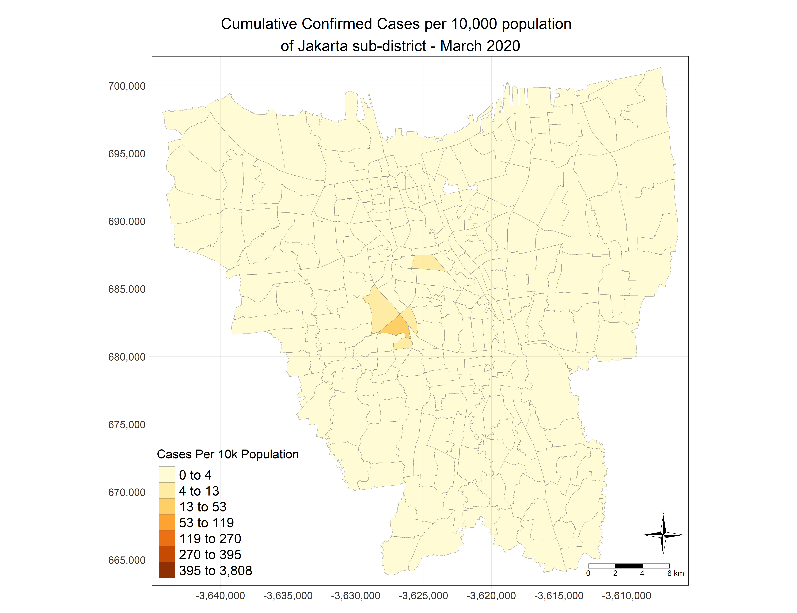
From the choropleth map, it can observe that in March 2020, the sub-district with the highest case per 10k population is around south-west Jakarta, specifically Senayan.
A darker shade of oranange indicates a higher COVID-19 rate per 10k population.
It is also interesting to note that sub_district near Senayan such as Gelora and Karet Semmangi, Rawa Barat appears to have higher COVID-19 rate per 10k population compared to other sub-district.
11.1.3 Time-series choropleth map of COVID-19 Rates
By using tm group by date in TM_FACETS, we can see the spatial-temporal patterns of COVID-19 case in DKI Jakarta between March 2020 to July 2021.

It can be observed that COVID-19 cases seem to spread outwards to the neighbouring sub-district with time.
In the first 3 month (Mar 2020 - May 2020), it appears that COVID-19 cases are mostly concentrated around the central and western Jakarta.
By August 2020, sub-district with the highest COVID-19 cases per 10k population (darker red areas) are mostly found in central jakarta
In the first half of 2021, COVID-19 cases per 10k population appears to spread throughout Jakarta. However, it is to noted that due to the large class interval of 395 to 3808, difference between the various sub_district may not be apparently from April 2021 onwards.
11.1.4 Animated Time-series choropleth map of COVID-19 Rates
To better visualize the changes across the various sub-district through time, we will plot an animated map with the same data.
Covd_Cases_Animation= tm_shape(Jakarta_Covid_Cases)+ tm_fill("Cases Per 10k Population", breaks = c(0, 4, 13, 53, 119, 270, 395, 3808) ,palette = "Reds") + tm_facets(along = "Date", free.coords = FALSE)
tmap_animation(Covd_Cases_Animation,file="C:/Users/User/Desktop/IS415/lye-jia-wei/IS415_blog/_posts/2021-08-30-take-home-exercise-1/Covid_Case_Animation.gif" , delay = 45)
Cumulative Confirmed Cases per 10k population In Jakarta Sub-District From Mar 2020 - Jul 2021

11.2 Cumulative Covid-19 Death
11.2.1 Data Preparation
The following code chunk will omit rows with missing month values and join the attribute data (Covid_DF) & spatial data (DKI_Jakarta).
Following which, the cumulative death per 10,0000 population will be calculated using the following formula:
\[ Monthly\ Cumulative\ Confirmed\ Death\ = \frac{Total\ no\ of\ Covid-19\ Death\ at\ Sub-District\ Level}{Total\ Population\ of\ the\ Sub-District} *\ 10,000\]
After which, we will then covert Jakarta_Covid_Cases into sf.
Jakarta_Death <- Covid_DF %>%
inner_join(DKI_Jakarta, by=c("Sub_District"="Sub_District")) %>%
group_by(Sub_District, Date) %>%
dplyr::summarise(`Death Per 10k Population` = ((sum(Death) / (Total_Population)))* 10000) %>% ungroup()
Jakarta_Death <- Jakarta_Death %>% left_join(DKI_Jakarta,
by=c("Sub_District"="Sub_District"))
Jakarta_Death <- st_as_sf(Jakarta_Death )
11.2.2 Plotting Choropleth Map of Monthly Cumulative Death
In the code chunk below, tm_shape() is used to define the input data (Jakarta_Death) and tm_fill() is used to illustrate the monthly cumulative confirmed cases at sub-district level.
Classification Method
Custom breaks will have to be specified explicitly to construct the classification scheme for Covid Death Per 10k Population.
To guide the specification of breakpoints, descriptive statistics of Covid Death Per 10k Population across months are first computed and studied.
summary(Jakarta_Death["Death Per 10k Population"])
Death Per 10k Population geometry
Min. : 0.0000 MULTIPOLYGON :4176
1st Qu.: 0.4592 epsg:23845 : 0
Median : 1.8004 +proj=tmer...: 0
Mean : 3.1676
3rd Qu.: 5.1803
Max. :42.0984 - It can be observed that Covid Death Per 10k population rate range from 0 to 42across sub district, from March 2020 to July 2021.
Break Point
To choose an appropriate number of classes, we will use the sturges formula \[ No\ of\ Classes = 1 + 1.32 * Log (Number\ of \ Values)\]
Classes=1+ 1.32* log(4176)
Classes
[1] 12.00498With the result and considering legibility, we will set the number of classes to be 7
The choropleth map is plotted with custom classification scheme.
Cumulative Death per 10,000 population of Jakarta Sub-district - March 2020

- From the map, it can be seen that Gondangdia and Senayan are the 2 sub-district with the highest Covid death in March 2020.
11.2.3 Time-series choropleth map of COVID-19 Rates
By using tm group by date in TM_FACETS, we can see the spatial-temporal patterns of COVID-19 death in DKI Jakarta between March 2020 to July 2021.
Cumulative Death per 10k population In Jakarta Sub-District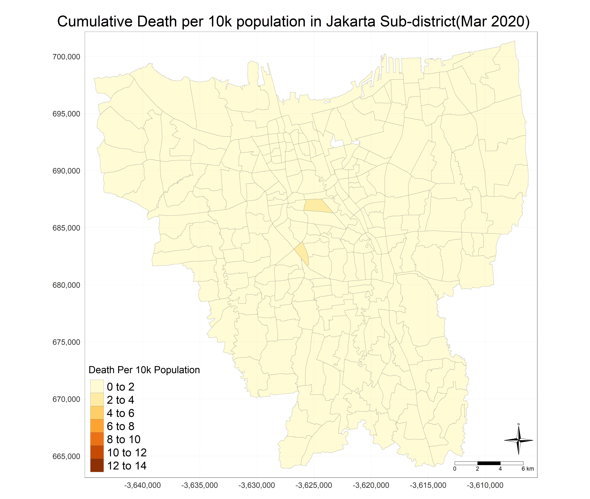
From the map, it is evident that despite the high covid case per 10k population shown earlier starkly contrast with the map depicitng covid death per 10k population. This may suggest that Covid-19 death rate is relatively low in the earlier period e.g March 2020 to Dec 2020
By Feb 2021, one particular sub-district, Gambir stood out as it is the only sub-district with a high (24-28) death per 10k population
Death per 10k population increases sharply after May 2020 and appears to be higher in Central Jakarta. The sharp rise in death per 10k population may be a result of the more fatal Covid-19 Delta variant, though additional statistical testing needs to be conducted to prove this hypothesis.
11.2.4 Animated Time-series choropleth map of COVID-19 Rates
To better visualize the changes in death rate across the various sub-district through time, we will plot an animated map with the same data.
Covd_Death_Animation = tm_shape(Jakarta_Death)+ tm_fill("Death Per 10k Population", breaks = c(4, 8, 12, 16, 20, 24, 28, 32) ,palette = "Reds") + tm_facets(along = "Date", free.coords = FALSE)
tmap_animation(Covd_Death_Animation, delay = 45)
Cumulative Death Rate In Jakarta Sub-District From Mar 2020 - Jul 2021

12. Analytical Map
12.1 Barchart
To better understand Jakarta sub-district which has been affected by Covid-19 the most in terms of infection rate and death rate, we will now proceed to plot bar chart that shows the top 10 district with highest Covid-19 cases and death from March 2020 to July 2021.
12.1.1 Bar Chart of Top 10 Sub-District With Highest Covid-19 Cases Per 10,000 Population
12.1.1.1 Combining aspatial and spatial dataframe
Again, we will combine the Covid_DF and DKI_Jakarta data frame by sub_district. We will use the same formula to calculate the Covid cases per 10,000 population and it will be named as Covid_Case_10K.
12.1.1.2 Dropping duplicated and NA Rows
Next, we will get drop the duplicated row as well as the NA rows.
Jakarta_Covid_Sub_District <-Jakarta_Covid_Sub_District[!duplicated(Jakarta_Covid_Sub_District), ]
Jakarta_Covid_Sub_District$Covid_Case_10k <- round(Jakarta_Covid_Sub_District$Covid_Case_10k ,0)
12.1.1.3 Plotting barchart
Following which, we will sort the sub_district by covid cases per 10k population and only plot the top 10 sub_district with highest covid cases.
top_n(Jakarta_Covid_Sub_District, n=10, Covid_Case_10k) %>%
ggplot(., aes(x=Covid_Case_10k, y=reorder(Sub_District, Covid_Case_10k),label= (Covid_Case_10k)))+
geom_bar(stat='identity')+
geom_col(fill='darksalmon') +
labs(title='Top 10 Sub-District With Highest Covid-19 Cases Rate',
x='No of Covid Cases',
y='Sub-District') +
geom_text(nudge_x=-900.85,vjust = 0.5, colour='gray23', size=2.87) +
theme_minimal()
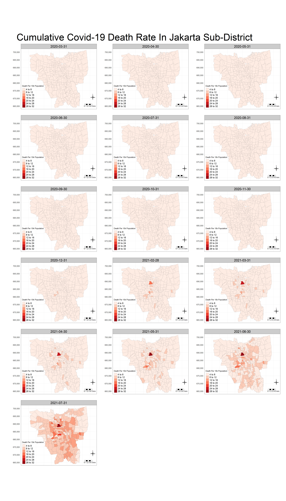
From the barchart, we can see that Gambir is the sub district with the highest Covid-19 cases per 10k population in Jakarta between March 2020 and July 2021.
To note that the top 3 sub-districted highlighted in the barchart are located close to each other as seen from the Choropleth map
12.1.2 Bar Chart of Top 10 Sub-District With Highest Covid-19 Death Per
10,000 Population
12.1.2.1 Combining aspatial and spatial dataframe
Again, we will combine the Covid_DF and DKI_Jakarta data frame by sub_district. We will use the same formula to calculate the Covid death per 10,000 population and it will be named as Death_Per_10K.
12.1.2.2 Dropping duplicated and NA Rows
Next, we will get drop the duplicated row as well as the NA rows.
Jakarta_Death_Sub_District <-Jakarta_Death_Sub_District[!duplicated(Jakarta_Death_Sub_District), ]
Jakarta_Death_Sub_District$Death_Per_10k <- round(Jakarta_Death_Sub_District$Death_Per_10k ,0)
12.1.2.3 Bar Chart
Following which, we will sort the sub_district by covid death per 10k population and only plot the top 10 sub_district with highest covid death.
top_n(Jakarta_Death_Sub_District, n=10, Death_Per_10k) %>%
ggplot(., aes(x=Death_Per_10k, y=reorder(Sub_District, Death_Per_10k),label= (Death_Per_10k)))+
geom_bar(stat='identity')+
geom_col(fill='darksalmon') +
labs(title='Top 10 Sub-District With Highest Covid-19 Death Rate',
x='No of Death',
y='Sub-District') +
geom_text(nudge_x=-7.85,vjust = 0.5, colour='gray23', size=2.87) +
theme_minimal() + theme(plot.title = element_text(size=10))
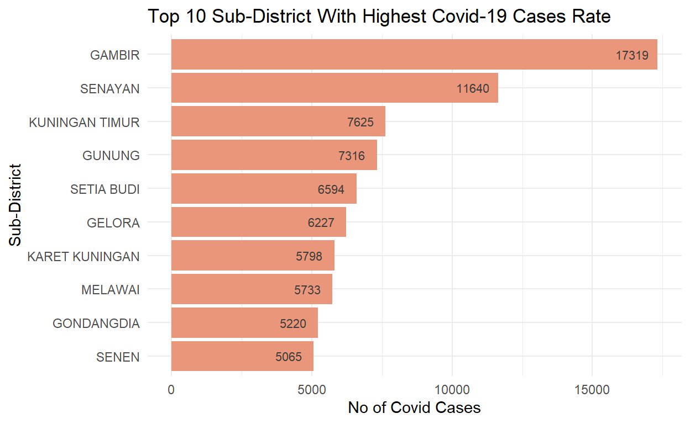
As pointed out previously in the Choropleth map, Gambir has one of the highest Covid-19 death per 10k population
Again, we can observe that the top sub-district with highest Covid-19 death per 10k population appears to be geographically near to one another
To note, the top 10 district with highest Covid-19 cases and Covid-19 death per 10k population differs slightly.
12.2 Box Map
A box map will be used to visualise covid cases spatially across different sub_district in Jakarta.
A customised classification scheme for the choropleth map will be constructed using the basic principles of a box plot.This ensures that data classification is not manipulated, and that the data is visualised accurately to represent the real-world situation. The box map will enable statistical interpretation of outliers and better identification of subzones that have relatively higher or lower demand compared to the rest of the subzones. In this analysis, data points will be considered outliers if they are more than 1.5 times interquartile range.
The following code chunks are functions to construct the box map which consist of
- boxbreaks to create break points for box map
- get.var to extract variable as vector out of dataframe
- Boxmap function with points overlayed on top of choropleth map
# To create break points for box map
boxbreaks <- function(v, mult=1.5) {
qv <- unname(quantile(v))
iqr <- qv[4] - qv[2]
# upfence and lofence define the area where points will be defined as outliers
upfence <- qv[4] + mult * iqr
lofence <- qv[2] - mult * iqr
# initialize break points vector
bb <- vector(mode="numeric",length=7)
# logic for lower and upper fences
if (lofence < qv[1]) { # no lower outliers
bb[1] <- lofence
bb[2] <- floor(qv[1])
} else {
bb[2] <- lofence
bb[1] <- qv[1]
}
if (upfence > qv[5]) { # no upper outliers
bb[7] <- upfence
bb[6] <- ceiling(qv[5])
} else {
bb[6] <- upfence
bb[7] <- qv[5]
}
bb[3:5] <- qv[2:4]
return(bb)
}
# Extract variable as vector out of dataframe
get.var <- function(vname, df) {
v <- df[vname] # %>% sf::st_set_geometry(NULL)
v <- unlist(v) # unname(v[,1])
return(v)
}
# Boxmap function
boxmap <- function(vnam, df, mtitle, legtitle=NA, mult=1.5, palette='-RdBu') {
df1 <- drop_na(df)
var <- get.var(vnam,df1)
bb <- boxbreaks(var)
tm_shape(df) +
tm_fill(vnam,
title=legtitle,
breaks=bb,
palette="Blues",
labels = c("Lower outlier", "< 25%", "25% - 50%", "50% - 75%","> 75%", "Upper outlier")) +
tm_borders(lwd=0.1, alpha=1) +
tm_layout(main.title = mtitle,
main.title.position = 'center',
main.title.size = 1,
frame = TRUE,legend.title.size = 1.20, legend.text.size = 1.10, legend.position = c("left", "bottom")) +
tm_compass(type="4star", size = 3) +
tm_scale_bar(width = 0.10, text.size = 0.90)+
tm_grid(lwd = 0.1, alpha = 0.2, labels.size = 1.10) +
tm_borders(alpha = 0.5)
}
# Boxmap function with points overlayed on top of choropleth map
boxmap_pts <- function(vnam, df, pointdf, mtitle, legtitle=NA, mult=1.5, palette='-RdBu') {
boxmap(vnam, df, mtitle, legtitle=legtitle, mult=mult, palette=palette) +
tm_shape(pointdf) +
tm_dots(col="gray23")
}
We will now use the function using the previous constructed dataframe, Jakarta_Covid_Cases to display summary statistics.
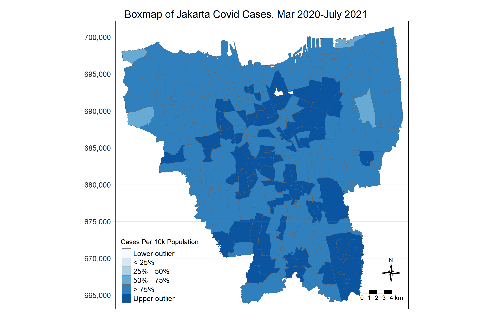
From the boxmap, we can efficiently identify outliers which in this case highlights that sub district in Central and Southern Jakarta region are of the upper outlier class
On the whole, it can be said that COVID-19 cases per 10k population in Jakarta belongs to the 50% - 75% class
12.3 Case Fatality Ratio (CFR)
Case Fatality Ratio (CFR) estimates the proportion of deaths among identified confirmed cases.To verify one of the earlier stated hypothesis that Covid-19 have low fatality rate, we will use the following formula:
\[ Case\ Fatality\ Rate\ = \frac{Total\ no\ of\ Covid-19\ Death\ at\ Sub-District\ Level}{Total\ Covid-19\ Cases\ of\ the\ Sub-District} *\ 100\]
The case fatality rate represents the proportion of cases that eventually die from a disease. Reliable CFRs that can be used to assess the deadliness of an outbreak and evaluate any implemented public health measures are generally obtained at the end of an outbreak, after all cases have been resolved (affected individuals either died or recovered). However, this calculation assumes that:
- The likelihood of detecting cases and deaths is consistent over the course of the outbreak.
- All detected cases have resolved (that is, reported cases have either recovered or died).
We will create a new dataframe called Merged_DF to calculate the CFR.
Next, we will plot the result on the map using jenks classification method
tmap_mode("plot")+
tm_shape(Merged_DF)+
tm_fill("Case Fatality Rate",n = 5, style="jenks",
legend.is.portrait = TRUE) +
tm_borders(alpha = 0.5) +
tm_layout(main.title = "Case Fatality Ratio (CFR) of Jakarta (Mar 2020- July 2021) ",
main.title.position = "center",
main.title.size = 0.75,title.size = 0.30,legend.title.size = 0.70,
legend.outside = FALSE,
legend.position = c("left", "bottom"),
frame = TRUE)+
tm_compass(type="4star", size = 2) +
tm_scale_bar(width = 0.10)+
tm_grid(lwd = 0.1, alpha = 0.2)
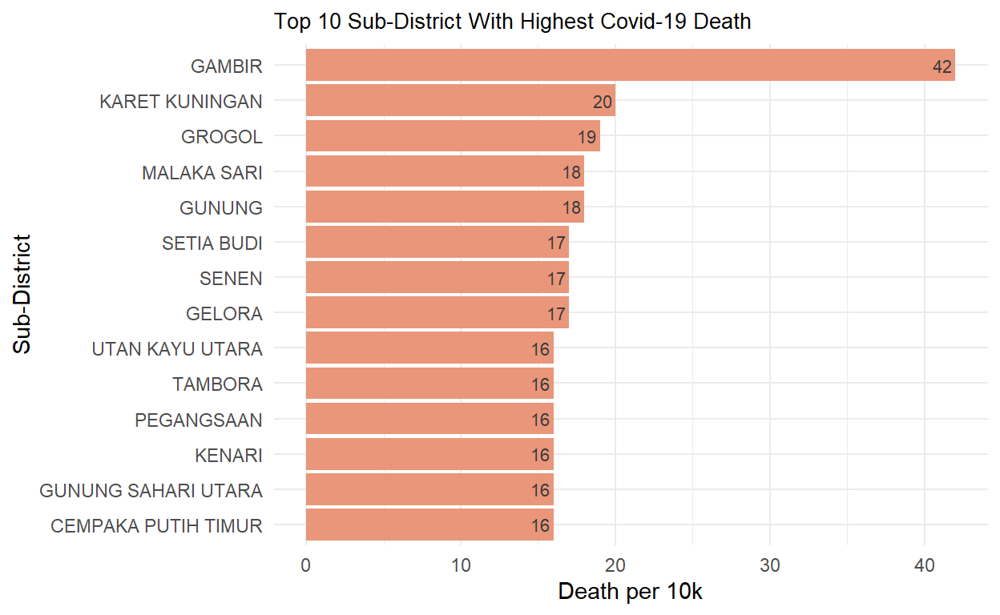
From the result, there appears to be difference in case fatality rate across sub-district in Jakarta
In line with earlier observation, CFR appears to be generally higher in Central Jakarta region
13. Localised Geospatial Statistic
13.1 Data Preparation
First, we will filter the time period of interest which are:
- March 2020
- March 2021
The time period is chosen based on 1 year after the onset of COVID-19 in Jakarta.
Data will be converted to the sp class to facilitate data analysis in this section.
#Jakarta_Covid_Cases_sp <- as(Jakarta_Covid_Cases, 'Spatial')
#Jakarta_Covid_Cases_sp
Jakarta_Covid_Cases_March20 <- Jakarta_Covid_Cases %>% filter(Date == "2020-03-31")
Jakarta_Covid_Cases_March21 <- Jakarta_Covid_Cases %>% filter(Date == "2021-03-31")
Jakarta_Covid_Cases_March21_sp <- as(Jakarta_Covid_Cases_March21, 'Spatial')
Jakarta_Covid_Cases_March20_sp <- as(Jakarta_Covid_Cases_March20, 'Spatial')
13.2 Define Weight Matrix
Before the analysis can be conducted, the weight matrix will first to have to defined for sub-district in Jakarta. The neighbourhood structure of sub-districts will be codified using contiguity weight matrices to express the spatial dependency between the sub-districts
13.2.1 Compute rook contiguity weight matrix
JK_Covid <- poly2nb(Jakarta_Covid_Cases_March21_sp, queen=FALSE)
summary(JK_Covid)
Neighbour list object:
Number of regions: 261
Number of nonzero links: 1364
Percentage nonzero weights: 2.002319
Average number of links: 5.226054
Link number distribution:
2 3 4 5 6 7 8 9 10
5 13 61 82 55 33 9 2 1
5 least connected regions:
35 88 155 220 255 with 2 links
1 most connected region:
110 with 10 links- The most connected sub-district has 10 neighbours.
- There are 5 sub-districts which are the least connected with only 2 neighbours.
13.2.2 Compute queen contiguity weight matrix
JK_queen <- poly2nb(Jakarta_Covid_Cases_March21_sp, queen=TRUE)
summary(JK_queen)
Neighbour list object:
Number of regions: 261
Number of nonzero links: 1488
Percentage nonzero weights: 2.184348
Average number of links: 5.701149
Link number distribution:
2 3 4 5 6 7 8 9 11
5 11 45 57 68 40 25 9 1
5 least connected regions:
35 88 155 220 255 with 2 links
1 most connected region:
110 with 11 links- The most connected sub-district has 11 neighbours.
- There are 5 sub-district which are the least connected with only 2 neighbour which is similar to rook contiguity weight matrix.
13.2.3 Compute number of regions with no neighbours
print(paste0('Rook contiguity: There are ', length(which(card(JK_Covid)==0)), ' sub-district(s) with no neighbours.'))
[1] "Rook contiguity: There are 0 sub-district(s) with no neighbours."print(paste0('Queen contiguity: There are ', length(which(card(JK_queen)==0)), ' sub-district(s) with no neighbours.'))
[1] "Queen contiguity: There are 0 sub-district(s) with no neighbours."- All sub-district had at least one neighbour.
13.2.4 Distribution of the number of neighbours for sub-district
# Create data frame using neighbour list for queen contiguity weight matrix.
# For each number of neighbour, count the number of municipalities having that number of neighbouring municipalities
JK_DF <- data.frame('Neighbours' = card(JK_queen)) %>%
group_by(Neighbours) %>%
dplyr::summarise(Count = n())
JK_DF[is.na(JK_DF)] = 0
# Create bar chart visualising the distribution of number of neighbours
ggplot(JK_DF, aes(x = Neighbours, y = Count)) +
geom_col(fill = 'slategray3') +
labs(title = 'Distribution of Number of Neighbours for Municipalities',
x = 'Number of Neighbours',
y = 'Number of Sub-district') +
theme_minimal() +
theme(axis.title.y = element_text(margin = margin(t = 0, r = 15, b = 0, l = 0)),
axis.title.x = element_text(margin = margin(t = 10, r = 0, b = 0, l = 0)),
plot.title = element_text(margin = margin(t = 0, r = 0, b = 20, l = 0)))
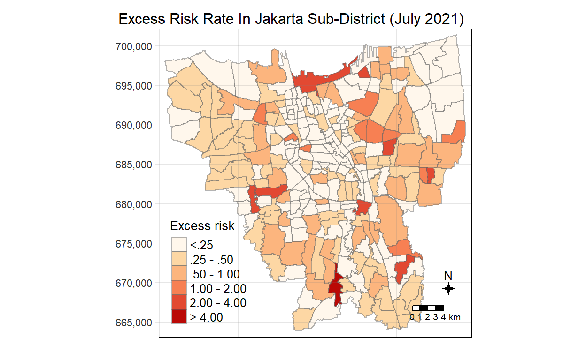
- Although all sub-district had at least one neighbour, majority of the sub-district only have small number of neighbours (6 and below) which might not lead to stable and statistically significant results.
13.2.5 Plot of Queen contiguity neighbour map
plot(Jakarta_Covid_Cases_March21_sp, border="lightgrey")
plot(JK_queen, coordinates(Jakarta_Covid_Cases_March21_sp), pch = 19, cex = 0.6, add = TRUE, col= "red")

From the plot, the use of contiguity based methods lead to edge effects, where sub-district at the edge e,g Northern Jakarta region only have a small number of neighbours.
Furthermore, it must be noted from the plot that large sub-district surrounded by smaller sub-districts will have far greater number of neighbours than its neighbouring zones
Considering the context of the analysis, COVID-19 is spread through contact and respiratory droplets. Hence for the sub-district in this analysis, being located at a certain distance from one another is more important than being located on which side of the boundary.
Thus, it could be more worthwhile to explore distance-based methods for computing the weight matrix.
13.3 Distance-based weight matrices
#coords <- coordinates(Jakarta_Covid_Cases_sp)
coords <- coordinates(Jakarta_Covid_Cases_March20_sp)
13.3.1 Adaptive distance
As COVID-19 rates were observed to be slightly skewed in earlier analysis, sub-district should be evaluated in the context of at approximately neighbours for results to be stable.
Noting that with the selection of more neighbours (higher k), spatial patterns become increasingly homogenised, 9 nearest neighbours are chosen for the computation of the adaptive distance matrix.
The following code chunk will compute adaptive distance matrix of 9 nearest neighbours
13.3.1.1 Compute adaptive distance matrix of 9 nearest neighbours
wm_knn9 <- knn2nb(knearneigh(coords, k=9))
wm_knn9
Neighbour list object:
Number of regions: 261
Number of nonzero links: 2349
Percentage nonzero weights: 3.448276
Average number of links: 9
Non-symmetric neighbours list- Each sub-district has 9 neighbours, there are no municipalities with no neighbours.
13.3.1.2 Summary statistics of neighbour distances with 9 nearest neighbours
Min. 1st Qu. Median Mean 3rd Qu. Max.
442.6 1513.3 2058.6 2317.7 2862.6 8800.7 - Using 9 nearest neighbours, the maximum distance between neighbours is 8800m which is a reasonable distance for citizens to engage in social interaction with one another which may then lead to the spread of COVID-19.
13.3.1.3 Adaptive distance neighbour map
plot(Jakarta_Covid_Cases_March20_sp, border="lightgrey")
plot(wm_knn9, coords, pch = 19, cex = 0.6, add = TRUE, col= "red")
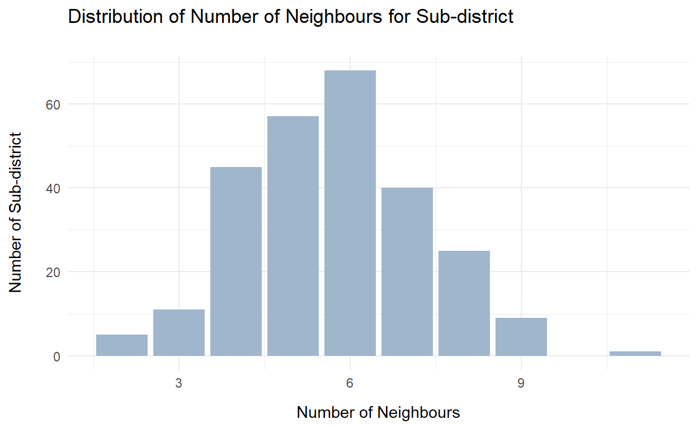
13.3 Local Morans I
Local Morans I (a local spatial autocorrelation indicator - LISA) will be utilised to detect spatial clusters of municipalities with high or low COVID-19 cases per 10k population rates, and detect outliers. The analysis will be conducted from Mar 2020 to Mar 2021to better analyse and understand spatial clusters and outliers across time.
Interpretation of local Morans I values
Ii<0: indicates negative spatial local autocorrelation, suggesting a combination of dissimilar values (high values surrounded by low values, or low values surrounded by high values)
Ii>0: indicates positive spatial local autocorrelation, suggesting a grouping of similar values (that are higher or lower than average)
13.3.1 Compute row-standardised weight matrix
The sum of weights of its neighbours for a particular sub-district is equal to 1.
The row-standardised weight matrix will be constructed as follow:
Weights are assigned to each neighbouring sub-district and standardised.
In a row-standardised weight matrix: For a particular sub-district, each neighbouring sub-district is assigned a fraction of 1 / Total number of neighbours. Each weight can thus be interpreted as the fraction of spatial influence on the particular sub-district that is ascribable to the neighbouring sub-district.
With weights assigned to each neighbour, in the computation of average neighbouring COVID-19 case per 10k population rate, each neighbours COVID-19 rate will be multiplied by its weight (1 / Total number of neighbours), then tallied.
rswm_knn9 <- nb2listw(wm_knn9, style = 'W')
rswm_knn9
Characteristics of weights list object:
Neighbour list object:
Number of regions: 261
Number of nonzero links: 2349
Percentage nonzero weights: 3.448276
Average number of links: 9
Non-symmetric neighbours list
Weights style: W
Weights constants summary:
n nn S0 S1 S2
W 261 68121 261 52.60494 1061.01213.3.2 Compute Local Morans I of COVID-19 Case Per 10k Population rate at the sub-district level for Mar 2020 and Mar 2021
localmoran_Mar20 <- localmoran(Jakarta_Covid_Cases_March20_sp$Cases.Per.10k.Population, rswm_knn9)
localmoran_Mar21 <- localmoran(Jakarta_Covid_Cases_March21_sp$Cases.Per.10k.Population, rswm_knn9)
JKT_localmoran_Mar20 <- cbind(Jakarta_Covid_Cases_March20_sp, localmoran_Mar20)
JKT_localmoran_Mar21 <- cbind(Jakarta_Covid_Cases_March21_sp , localmoran_Mar21)
Here is the coefficients for Local Morans I for Mar 2020 for the first 10 sub-district
- Ii: local Moran statistic
- E.Ii: expectation of local Moran statistic
- Var.Ii: variance of local Moran statistic
- Z.Ii: standard deviate of local Moran statistic
- Pr(): p-value of local Moran statistic
head(JKT_localmoran_Mar20, 5)
class : SpatialPolygonsDataFrame
features : 5
extent : -3630494, -3612584, 669727, 698731.4 (xmin, xmax, ymin, ymax)
crs : +proj=tmerc +lat_0=0 +lon_0=139.5 +k=0.9999 +x_0=200000 +y_0=1500000 +ellps=WGS84 +towgs84=0,0,0,0,0,0,0 +units=m +no_defs
variables : 16
names : Sub_District, Date, Cases.Per.10k.Population, Object_ID, Village_Code, Village, ID, Province, City, District, Total_Population, Ii, E.Ii, Var.Ii, Z.Ii, ...
min values : ANCOL, 18352, 0, 25455, 3172051003, ANCOL, 317205, DKI JAKARTA, JAKARTA BARAT, CIPAYUNG, 11695, -0.0336105625690283, -0.00384615384615385, 0.0204054783376411, -0.20836456788388, ...
max values : BAMBU APUS, 18352, 1.71013253527148, 25642, 3175101006, BAMBU APUS, 317510, DKI JAKARTA, JAKARTA UTARA, TAMBORA, 36428, 0.0505499406939711, -0.00384615384615385, 0.0204054783376411, 0.380797711755426, ... Here is the coefficients for Local Morans I for Mar 2021 for the first 10 sub-district
head(JKT_localmoran_Mar21, 5)
class : SpatialPolygonsDataFrame
features : 5
extent : -3630494, -3612584, 669727, 698731.4 (xmin, xmax, ymin, ymax)
crs : +proj=tmerc +lat_0=0 +lon_0=139.5 +k=0.9999 +x_0=200000 +y_0=1500000 +ellps=WGS84 +towgs84=0,0,0,0,0,0,0 +units=m +no_defs
variables : 16
names : Sub_District, Date, Cases.Per.10k.Population, Object_ID, Village_Code, Village, ID, Province, City, District, Total_Population, Ii, E.Ii, Var.Ii, Z.Ii, ...
min values : ANCOL, 18717, 195.728560448007, 25455, 3172051003, ANCOL, 317205, DKI JAKARTA, JAKARTA BARAT, CIPAYUNG, 11695, -0.0117370782046478, -0.00384615384615385, 0.0890141328968958, -0.0264483386754424, ...
max values : BAMBU APUS, 18717, 325.423302070876, 25642, 3175101006, BAMBU APUS, 317510, DKI JAKARTA, JAKARTA UTARA, TAMBORA, 36428, 0.584846424622372, -0.00384615384615385, 0.0890141328968958, 1.97314534821199, ... 13.3.3 Map Local Morans I
To enable a better understanding of the calculated scores, local Morans I scores for Mar 2020 and Mar 2021 are visualised on a choropleth map.
Here is the function for constructing the choropleth map:
localmoran_map <- function(df, Date) {
tm_shape(df) +
tm_fill(col = "Ii",
style = "pretty",
palette = "RdBu",
title = 'Local Moran \nStatistics') +
tm_borders(alpha = 0.5) +
tm_layout(panel.labels = sprintf('Local Moran\'s I,%s', Date),
panel.label.color = 'gray12',,legend.title.size = 2.75, legend.text.size = 2.55, title.size=3, panel.label.size = 3)+
tm_compass(type="4star", size = 4) +
tm_scale_bar(width = 0.15,text.size = 2.30) +
tm_grid(lwd = 0.1, alpha = 0.2, labels.size = 1.50)
}
Plotting the map
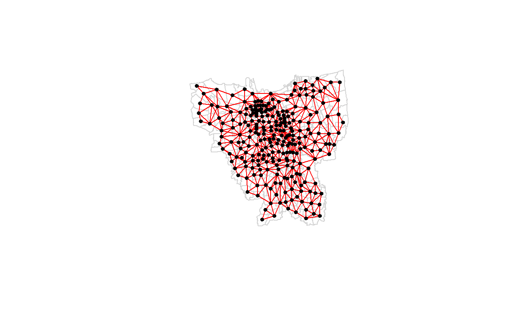
- Blue areas (positive local Morans I) indicate positive spatial local autocorrelation
- Red areas (negative local Morans I) indicate negative spatial local autocorrelation.
- The choropleth local Morans I plot both positive and negative local Morans I values during the study period
We will now consider the local Moran statistics with its corresponding p-values, to interpret if the values have statistical significance. As such, local Morans I values and the corresponding p-values will be visualised spatially side-by-side to understand sub-district which have local Morans I values that are statistically significant.
The following code chunk is a function to construct p-value map:
pvalue_map <- function(df, Date) {
tm_shape(df) +
tm_fill(col = "Pr.z...0.",
breaks=c(-Inf, 0.001, 0.01, 0.05, 0.1, Inf),
palette = "-Blues",
title = 'P-values', title.size=2.8)+
tm_compass(type="4star", size = 4) +
tm_scale_bar(width = 0.15,text.size = 2.30)+
tm_grid(lwd = 0.1, alpha = 0.2,labels.size=2.00)+
tm_borders(alpha = 0.5) +
tm_layout(panel.labels = sprintf('Local Moran\'s I p-values,%s', Date),
panel.label.color = 'gray12', legend.outside = FALSE,legend.title.size = 2.75, legend.text.size = 2.55, panel.label.size = 3)
}
Plotting the map
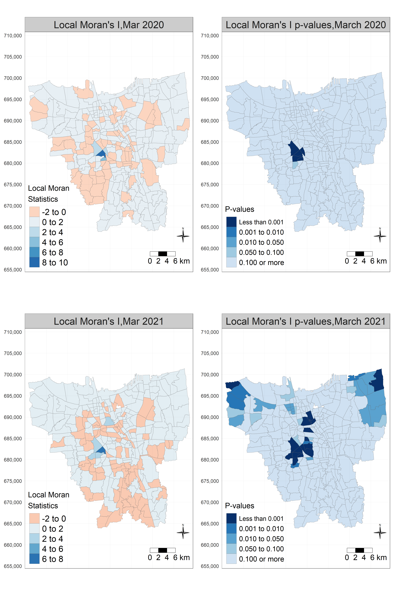
March 2020
Relatively high and positive local Morans I values as indicated by darker blue areas on the local Morans I plot March 2021 around Karet Semmangi
These values are statistically significant at 99.9% confidence level, with p-values of less than 0.001 indicated by the corresponding areas that are in darkest shade of blue at the p-value plot.
From the result, we can onserve that there is significant and positive local autocorrelation for COVID-19 case per 10k population at these bordering sub-district, suggesting a grouping of sub-district with COVID-19 rates that are higher than average for these bordering sub-districts during March 2020.
March 2021
One year after onset of COVID-19, sub-district with positive and relatively higher Morans I values are statistically significant at 99.9% confidence level (p-value less than 0.001).
There is therefore significant and positive local autocorrelation for COVID-19 cases per 10k population rate at sub-district in March 2021, suggesting that this group of sub-district are a cluster for COVID-19 at March 2021, with COVID-19 rates that are higher than average.
14. Conclusion
Through the different analysis, the following observations were made:
Spatial-temporal patterns of Covid-19 Cases and how they change over time.
COVID-19 cases seem to spread outwards to the neighbouring sub-district with time as seen from the time-series choropleth map of Covid-19 rate
Significant and positive local autocorrelation for COVID-19 case per 10k population at bordering sub-district, suggesting a grouping of sub-district with COVID-19 rates that are higher than average for bordering sub-districts during March 2020.
Significant and positive local autocorrelation for COVID-19 cases per 10k population rate at sub-district in March 2021, suggesting that this group of sub-district are a cluster for COVID-19 at March 2021, with COVID-19 rates that are higher than average.
Sub-districts with relatively higher number of confirmed cases
- In descending order of Covid rate per 10k population: Gambir, Senayan and Kuningan Timur